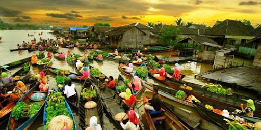
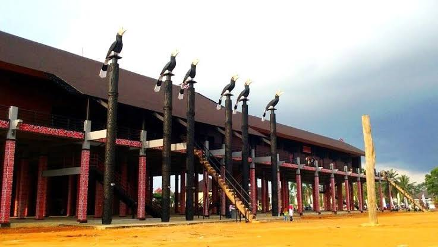
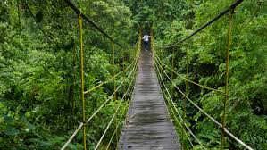
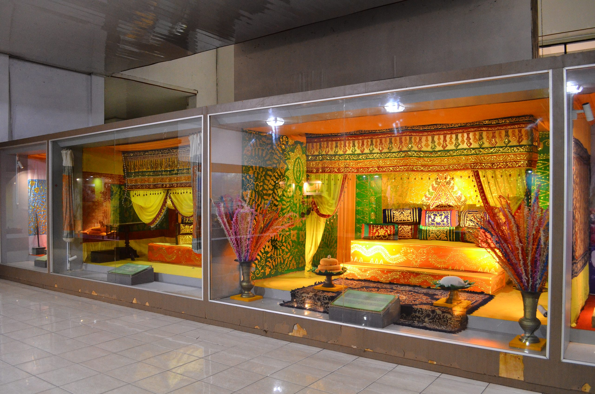
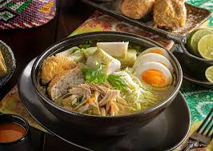
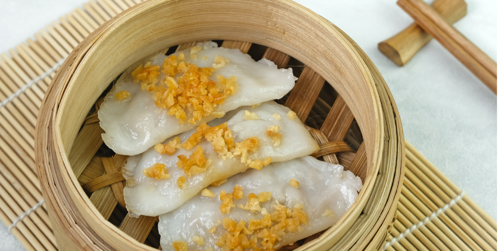
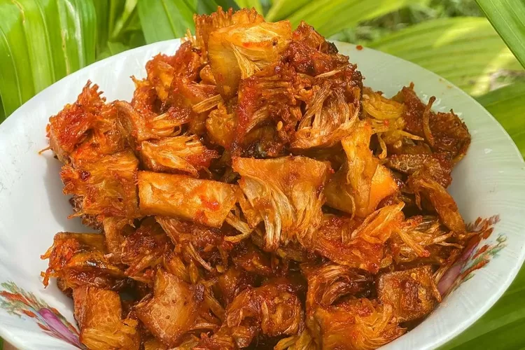

Tentang Pulau Kalimantan
Pulau Kalimantan, atau dikenal secara internasional sebagai **Borneo**, adalah pulau terbesar ketiga di dunia dan terkenal sebagai salah satu paru-paru dunia karena hutan hujan tropisnya yang sangat luas. Pulau ini dibelah oleh garis khatulistiwa dan terbagi menjadi lima provinsi di Indonesia. Kalimantan identik dengan **sungai-sungai besar** yang menjadi jalur kehidupan utama dan habitat alami bagi berbagai flora dan fauna endemik, termasuk orangutan.
✨ Mengapa Memilih Kalimantan?
Kalimantan adalah destinasi ideal bagi pecinta **ekowisata** dan petualangan di alam liar. Anda dapat menjelajahi hutan hujan yang tak tertandingi, bertemu langsung dengan **orangutan** di habitat aslinya di Taman Nasional Tanjung Puting, dan merasakan kehidupan sehari-hari masyarakat yang masih sangat bergantung pada sungai. Selain itu, Anda bisa menyelami kekayaan budaya **Suku Dayak**, yang terkenal dengan seni ukir, tarian, dan rumah panjang tradisional mereka. Wisata di Kalimantan menawarkan pengalaman yang otentik dan edukatif tentang konservasi alam dan kearifan lokal yang tersembunyi jauh dari hiruk pikuk kota besar.
🗺️ Destinasi Unggulan
Taman Nasional Tanjung Puting, Kalteng

Tujuan utama untuk melihat **orangutan** di alam liar. Wisatawan menyusuri Sungai Sekonyer menggunakan perahu klotok untuk mengunjungi pusat rehabilitasi seperti Camp Leakey.
Pasar Terapung Lokbaintan, Kalsel
Pasar tradisional yang seluruh aktivitas jual-beli dilakukan di atas perahu di Sungai Martapura. Menawarkan pemandangan unik dan pengalaman budaya khas Banjar di pagi hari.
Kepulauan Derawan, Kaltim

Gugusan pulau yang terkenal dengan keindahan bawah lautnya. Daya tarik utamanya adalah **Danau Kakaban** yang memiliki ubur-ubur tanpa sengat (stingless jellyfish).
Rumah Betang Radakng, Kalbar
Rumah panjang tradisional **Suku Dayak** di Pontianak yang menjadi pusat budaya. Melambangkan arsitektur adat dan kehidupan komunal masyarakat Dayak.
Taman Nasional Kutai, Kaltim
Taman nasional yang melestarikan ekosistem hutan hujan dataran rendah yang kaya. Merupakan habitat bagi orangutan, bekantan, dan berbagai jenis burung.
Museum Lambung Mangkurat, Kalsel
Museum terbesar di Kalimantan Selatan yang menyimpan artefak sejarah Kesultanan Banjar, koleksi senjata tradisional, serta benda-benda budaya Suku Dayak dan Banjar.
Makanan Khas Pulau Kalimantan
-
1. Soto Banjar, Kalimantan Selatan
Soto khas Banjar dengan kuah yang sedikit keruh dari campuran rempah dan susu. Biasanya disajikan dengan ketupat, perkedel kentang, dan taburan bawang goreng.
-
2. Choipan (Chai Kue), Kalimantan Barat
Jajanan khas Pontianak yang terbuat dari kulit tepung beras tipis, diisi dengan bengkuang, kucai, atau talas, lalu dikukus dan disajikan dengan sambal cuka pedas.
-
3. Nasi Bekepor, Kalimantan Timur

Nasi yang dimasak dengan rempah-rempah dan dimatangkan dengan cara dimasukkan ke dalam bambu. Biasanya disajikan bersama **Sambal Raja** khas Kutai.
-
4. Mandai, Kalimantan Tengah
Olahan kulit cempedak yang diawetkan melalui fermentasi. Rasanya unik, asam manis, dan biasanya diolah menjadi lauk tumisan pedas.
📸 Galeri Foto Kalimantan